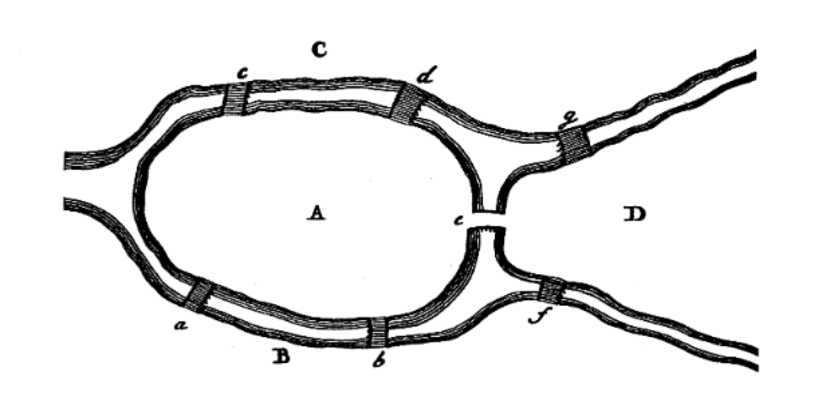

Kodu Göster
import networkx as nx
# Boş bir yönsüz graf oluşturma
G = nx.Graph()
print(type(G))<class 'networkx.classes.graph.Graph'>Graf teorisi, 18. yüzyılda İsviçreli ünlü matematikçi Leonhard Euler’in çözdüğü meşhur bir bulmaca ile doğmuştur: Königsberg’in Yedi Köprüsü (Seven Bridges of Königsberg) problemi.
Königsberg şehri (günümüzde Rusya’ya bağlı Kaliningrad), Pregel Nehri’nin her iki yakasını ve nehir üzerindeki iki büyük adayı birbirine bağlayan yedi köprüye sahipti. Şehir sakinleri şu sorunun cevabını merak ediyordu:
“Şehirdeki herhangi bir noktadan başlayıp, yedi köprünün her birinden tam olarak bir kez geçerek tüm şehri dolaşmak ve başlanılan noktaya geri dönmek mümkün müdür?”
Euler, 1736 yılında bu problemin imkansız olduğunu matematiksel olarak kanıtladı. Problemi çözerken, karaları düğümlere (nodes / vertices), köprüleri ise bu karaları birbirine bağlayan kenarlara (edges / links) dönüştürdü. Böylece tarihteki ilk grafı (ağı) modelledi.
Euler, bir düğümden geçip gitmek için o düğüme bir kenardan girip diğer kenardan çıkılması gerektiğini fark etti. Dolayısıyla, başlangıç ve bitiş düğümleri hariç, tüm düğümlerin bağlı olduğu kenar sayısının (yani düğüm derecelerinin - degree) çift sayı olması gerekiyordu. Königsberg’deki karaların (düğümlerin) kenar sayıları incelendiğinde sırasıyla 3, 3, 3 ve 5 olduğu (hepsinin tek sayı olduğu) görüldü. Bu durum, böyle bir yürüyüşün (Euler Yolu / Euler Path) imkansız olduğunu gösteriyordu.
Bu problem ve Euler’in sunduğu çözüm yöntemi, modern Graf Teorisi (Graph Theory) ve Topoloji bilim dallarının resmi başlangıcı olarak kabul edilir.

:::Bir Graf, \(G=(V,E)\) şeklinde ifade edilen bir demettir; burada \(V\), köşelerden oluşan sonlu bir kümedir ve \(E\), \(V\)’nin tek veya iki elemanlı alt kümelerinden elemanlar içeren kümelerden oluşan bir koleksiyondur. \(V\) düğümler (vertices, nodes) ve \(E\) kenarlar (edges) olarak adlandırılır.
NetworkX kütüphanesini kullanarak boş bir yönsüz graf oluşturarak başlayalım.
İlk olarak NetworkX kütüphanesini içe aktarıyoruz ve boş bir Graph nesnesi oluşturuyoruz:
<class 'networkx.classes.graph.Graph'>Oluşturduğumuz G grafına düğümler eklemenin farklı yolları vardır. NetworkX oldukça esnektir; Python’da hashable (yani değiştirilemez ve benzersiz şekilde indekslenebilir) olan neredeyse her nesne bir düğüm olabilir.
None Nesnesi İstisnası: Python’ın
Nonenesnesi NetworkX’te bir düğüm olarak kullanılamaz. Birçok fonksiyonun isteğe bağlı parametre atamalarında kontrol amaçlı kullanıldığı için kütüphane tarafından düğüm olarak kabul edilmez.
add_node() metodunu kullanarak tek bir düğüm ekleyebiliriz:
add_nodes_from() metoduna bir Python listesi, kümesi veya aralığı (range) göndererek toplu düğüm eklemesi yapabiliriz:
Başka bir grafın düğümlerini de doğrudan grafımıza ekleyebiliriz:
G'nin yeni düğümleri: [1, 2, 3, 4, 5, 6, 0, 7, 8, 9]Yol Grafı: Düğümlerin ardışık bir şekilde, kenarlarla tek bir hat üzerinde birleşmesiyle oluşan en basit ve temel graf türlerinden biridir.
Kenarlar düğümler arasındaki ilişkileri gösterir. Tıpkı düğümlerde olduğu gibi kenarları da tek tek veya toplu halde ekleyebiliriz.
add_edge() metodunu kullanarak iki düğüm arasına bir bağlantı atarız:
add_edges_from() metodu ile bir tuple listesi göndererek toplu bağlantılar oluşturabiliriz:
Graftaki Kenarlar: [(1, 2), (1, 3), (2, 4), (3, 5)]Otomatik Düğüm Oluşturma Özelliği
NetworkX’te henüz grafa eklenmemiş düğümler arasına bir kenar eklerseniz, kütüphane bu düğümleri otomatik olarak tespit eder ve grafa ekler. Düğümleri önce ayrı olarak eklemenize gerek yoktur.
Bunu bir örnekle görelim:
99 düğümde var mı?: False
99 düğümde var mı?: True
100 düğümde var mı?: True
Yeni kenarlar: [(1, 2), (1, 3), (2, 4), (3, 5), (99, 100)]Grafı tamamen boşaltmak istiyorsak clear() metodunu çağırabiliriz. Bu işlem tüm düğümleri ve kenarları siler:
Düğümler: []
Kenarlar: []